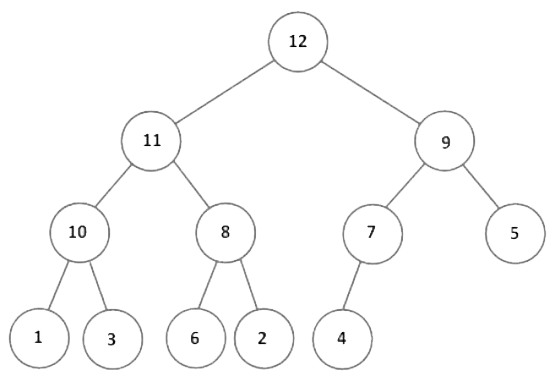

(A kupac adatszerkezet nem a programozási nyelvekben előforduló heap.)
Egy bináris fa szigorúan bináris fa, ha a fa minden belső csúcsának két
gyereke
van. A teljes bináris fa egy olyan szigorúan bináris fa, ahol minden levél azonos szinten
helyezkedik el. A majdnem teljes bináris fa egy olyan teljes bináris fa, melynek
levélszintjéről
nulla, egy vagy több levelet elveszünk, de nem az összeset. A majdnem teljes balra tömörített
bináris
fa egy majdnem teljes bináris fa, de az alsó szintjén egyetlen levéltől balra sem lehet új
levelet
beszúrni. Ezeket szintfolytonos fáknak is nevezzük.
A bináris kupacnak két fajtája van, a maximum és a minimum kupac. A
maximum
kupac egy majdnem teljes, balra tömörített bináris fa, melynek minden belső csúcsára
teljesül,
hogy a
belső csúcs kulcsa nagyobb vagy egyenlő a gyerekei kulcsánál. Így kupac gyökerében mindig az egyik
legnagyobb elem található. Minimum kupac hasonlóan, a szülő kulcs kisebb vagy egyenlő a
gyerekei
kulcsánál. A kupac részfái is mindig kupacok.

Kupac ábrázolása:
A bináris fák aritmetikai (tömbös) ábrázolását fogjuk használni. A fában való
navigálás a tömb indexeinek segítségével történik. A tömbben a szülő-gyerek és a gyerek-szülő
kapcsolatokat az alábbi képletek
adják:
- csúcs indexe: $i$
- csúcs bal gyereke: $2 \cdot i$
- csúcs jobb gyereke: $2 \cdot i + 1$
- csúcs szülője: $\lfloor \frac{i}{2} \rfloor$
Kupac műveletei:
A kupac műveleteinek fenn kell tartania a kupac tulajdonságot. A kupac általában
nem
teljesen foglalja el az őt ábrázoló tömböt, vannak utána „üres” helyek, melyeket elfoglalhat egy
elem a
kupacba történő beszúráskor.
Beszúrás:
Az új elemet a tömbben az utolsó eleme után helyezzük el, így a kupac alakja
továbbra
is balra tömörített lesz. Ezután az új elemet addig emeljük a gyökér felé, amíg a kupac
tulajdonság
helyre nem áll, azaz helyet cserél a szülőjével mindaddig, míg a beszúrt elem kulcsa nagyobb, mint a
szülőjének a kulcsa, vagy fel nem ér a kupac tetejére.
Maximális elem törlése:
A kupacban a maximális elem a gyökér elem. Ez az elem a tömb első eleme. A
maximális
elem eltávolításakor a helyére a tömb utolsó elemét helyezzük, ezzel megmarad a balra tömörítettség.
Ezután kezdődik a süllyesztés. A kulcs addig süllyed lefelé a kupacban,
míg
kisebb, mint a nagyobbik gyereke (ha két gyereke van). Kiválasztjuk a nagyobbik gyerekét, és ha a
süllyesztendő kulcs kisebb nála, akkor helyet cserélnek. A süllyesztés addig tart, míg a
süllyesztendő
kulcs nagyobb vagy egyenlő lesz, mint a nagyobbik gyereke, vagy leérünk a kupac aljára.
| $i := k$ |
| $j := left(k)$ |
| $b := true$ |
|
$j \lt n \land b$ |
$j + 1 < n \land A[j+1] > A[j]$
|
| $j := j+1$
|
$\text{SKIP}$ |
$A[i] < A[j]$
|
| $swap(A[i],
A[j])$ |
$b := false$
|
| $i := j$ |
| $j :=
left(j)$ |
Kupacrendezés:
A kupacrendezés során maximum kupacot használunk. A minimum kupacot
általában
a
prioritásos soroknál alkalmazzák.
A bemenő kulcsokat helyben rendezi, tehát a számokat az $A$ tömbön belül
rakja a
helyes sorrendbe és legfeljebb csak állandó számú elem tárolódik a tömbön kívül.
Az algoritmus az összehasonlító rendezések közé tartozik, azaz az elemek
sorrendjét azok összehasonlításával állapítja meg.
A kupacrendezés nem stabil rendezés. azaz az azonos
kulcsú
elemek egymáshoz viszonyított sorrendjét nem feltétlenül őrzi meg. Például, ha van kettő 32-es,
akkor nem
biztos, hogy ugyanabban a sorrendben lesznek a rendezés végén, mint rendezés előtt voltak.
Aszimptotikusan optimális összehasonlító rendezés, ugyanis a
műveletigényének
felső korlátja megegyezik az alsó korláttal, ($O (n \cdot log \space n)$, $\Omega (n \cdot log \space
n)$).
Működése:
Először meghívjuk a $buildMaxHeap()$ eljárást, amely a bemenő tömbünket maximum
kupaccá alakítja. Ez oly módon történik, hogy a legutolsó levél szülőjétől kezdve lesüllyesztjük a
szülőket addig, amíg kisebb, mint a nagyobbik gyereke. Ezt az összes szülő csúcsra el kell végezni.
Miután kész a maximum kupacunk, megcseréljük a gyökér elemet a tömbben lévő
utolsó
elemmel. Ezzel a legnagyobb elem (gyökér) a tömb legvégére kerül, ezzel ő már a helyén van, többet
nem
is kell vele foglalkozni. Az új gyökér elem a tömbben a legutolsó elem volt, tehát ő biztosan nem a
jelenlegi legnagyobb elem, ezért le kell süllyeszteni, hogy helyreálljon a maximum kupac
tulajdonság.
Miután lesüllyesztettük ismét maximum kupacunk van. Ezt kell ismételgetni addig, amíg minden elem a
helyére nem kerül.
Műveletigény:
- A $buildMaxHeap()$ műveletigénye: $\Theta (n)$
- A rendezés többi részének műveletigénye: $O (log \space n)$
- Így a teljes rendezés műveletigénye: $MT(n) \in \Theta(n \cdot log \space n)$, mivel bármely
összehasonlító algoritmusnak a legrosszabb esetben $\Omega (n \cdot log \space n)$
összehasonlításra
van szüksége $n$ elem rendezéséhez.
Gyakorlati alkalmazása:
Használják memóriafoglalással, a hulladékgyűjtéses memóriakezeléssel
(garbage-collected storage) kapcsolatban is, például a Lisp és Java nyelvekben.